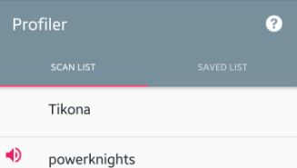
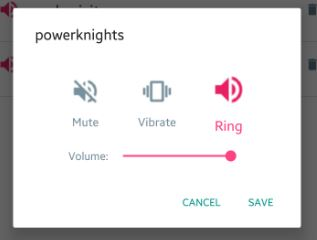
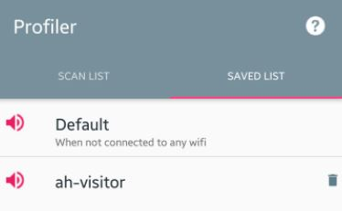

Application's home screen consists of two tabs,
SCAN LIST and SAVED LIST
SCAN LIST tab lists all available wifi's around.
SAVED LIST tab shows up the preferences you've already entered for a wifi

You can add/change your preference for any wifi, just by tapping on it.!
Tapping on a wifi opens up the dialogue asking you to enter your preference.

With each wifi in the tabs, you'll be able to identify what you've entered by the icon at the left side.
For the saved wifis you'll also be able to delete the preference by clicking the icon.
You can also see an entry "Default" in this tab. Its preference will be applied when you are disconnected from wifi.